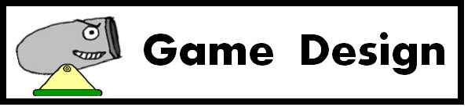
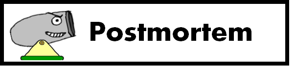

Out & In
게임 장르 :2D 퍼즐 발사 게임
- 사용 엔진 : Warp Engine
- 사용 언어 : C++, C
- 플랫폼 : Windows
- 마일스톤 : 베타
하이 컨셉
“Out & In 은 플레이어가 목표에 도달하기 위해서 일정한 각도로 공을 쏴야 하는 2d퍼즐 발사 게임입니다.
자세한 컨셉
Out & In 은 레벨을 클리어하기 위해서 플레이어가 공을 특정 구역에 도달하게 해야하는 게임입니다. 이를 위해서는 플레이어가 화살표 키보드와 스페이스 바를 사용하여 대포의 각도와 힘을 조절해야 합니다. .
플레이어의 라이프 수는 제한적입니다. 플레이어가 별을 획득하면 더 높은 클리어 등급을 받을 수 있습니다. 하지만, 처리해야 할 장애물이 있기 때문에, 플레이어들은 행동을 취하기 전에 생각해야 합니다..
게임 플로우
스플래시 스크린
게임이 시작되면Digipen로고와 팀 DizzyPen ,Fmod의 짧은 스플래시 화면이 표시됩니다. .
옵션
옵션 스테이트에서 사용자는 창모드 설정과 전체화면 모드를 설정할 수 있고, 게임 데이터를 초기화 시킬 수 있습니다. .
메뉴
Out and In 에는 30개의 레벨이 존재합니다. 레벨 셀렉트 스테이트에서 마우스를 이용해 레벨을 선택할 수 있습니다. 하지만 그 전레벨을 클리어해야만 다음 레벨을 선택할 수 있습니다. .
게임스크린
게임이 시작되면 레벨마다 대포의 위치가 정해집니다. 하지만, 대포의 각도와 힘은 플레이어에 의해 결정됩니다. 각 레벨마다, 플레이어들이 그 단계를 클리어하는데 시간을 보낼 수 있도록, 다루어야 할 여러가지 장애물이 있습니다. 플레이어가 레벨을 클리어할려면 공을 클리어 존에 놓아야 합니다. .
게임 메커니즘
물리
이 게임의 주요한 물리학은 중력, 충돌(collision) 그리고 튕김(reflection)에 초점을 맞추고 있습니다. 중력은 실생활처럼 작동하는 물체를 만들어서 게임을 하는데 도움을 줄것이다. 중력은 포탄과 몇몇 장애물에 적용됩니다.이 충돌은 플레이어가 더 복잡한 수준의 레벨을 클리어하는 데 도움을 주는 핵심적인 요소입니다. 튕김도 이 게임에서 중요한 역할을 힙니다. 공이 지면에 떨어질 때, 공은 반사되어야 한다. 또한, 공이 힘을 가지고 벽 위에 충돌한다면, 그것은 반사되어야 합니다. .
조작법
기본적인 조작법은 화살표 키를 사용하여 공을 쏘는 대포의 각도를 조절하는 것이다. 플레이어가 각도를 결정한 후에 스페이스 바를 누르면 대포의 힘이 결정됩니다. 공이 벽보다 높이 올라가야 할 경우, 플레이어가 오랫동안 스페이스 바를 눌러야 공이 벽을 넘어가기에 충분할 것이다. .
승리 조건
이기는 조건은 매우 간단합니다. 목표 지역에 공을 놓는 것입니다. 하지만 많은 장애물이 존재하기 때문에 높은 레벨을 쉽게 클리어하는 것은 어렵습니다. .
패배 조건
레벨마다 3번의 기회가 있습니다. 플레이어가 주어진 기회안에 레벨을 클리어하지못한다면 게임에서 패배합니다. .
스코어 시스템
레벨마다 3개의 별이 존재합니다. 많은 별을 먹을때마다 점수가 올라갑니다. .
게임 디자인
레벨
각 레벨에는 가시,움직이는 벽, 중력이 바뀌는 구역, 부숴지는 벽등 다양한 물체가 있습니다. .
라이프
라이프는 특정 숫자로 제한되어있고, 볼이 레벨밖으로 나가면 라이프를 잃고 공이 모든 추진력을 잃는다면 라이프를 잃습니다. .
HUD
HUD 측면에서 라이프의 갯수와 현재의 레벨 단계, 대포의 현재 각도를 보여줍니다. .
사운드
기본적인 배경음악이 재생되고 대포에서 공이 발사될때 소리가 재생되고 , 승리하거나 패배할때에도 사운드가 재생됩니다.모든 사운드는 디지펜 사운드 에셋을 이용합니다. .
스코어 시스템
레벨마다 3개의 별이 존재합니다. 많은 별을 먹을때마다 점수가 올라갑니다. .

포스트모템 TEAM DizzyPen
개발 팀
현준, 범근,성현은 이전 학기까지 기숙사에서 같이 살았다. 같이 살면서 우리는 지식과 우정을 나누었다. 우리는 스시 레스토랑에서 점심을 같이 먹으면서 같이 일하기로 결정하였다. 우리는 개인의 능력에 대해 이야기를 나누었고 팀으로 일하기로 결정했다. 개개인의 능력을 자세하게 설명하자면 현준은 팀을 이끌 리더쉽이 있고, 그는 좋은 작문 실력을 가지고 있어서 프로듀서로서 이 프로젝트에 참여했다. 범근이는 관찰과 분석에 탁월해서 팀에서의 테스트 매니저 역할을 맡았다. 다른 맴버들보다 수학과 물리를 잘하는 성현은 물리 파트를 맡았다. 마지막으로, 매우 창의적이고 우리 팀에게 동기 부여를 줄 수 있는 현민이는 리드 디자이너의 역할을 맡았다..
툴
오디오 파일의 길이를 줄이기 위해 “Audacity”가 사용되었다..
우리는 “paint.net” 을 사용하여 사용자 인터페이스, 문자와 같은 그래픽 자료를 제작했습니다. VisualStudio와 WarpEngine 으로 코딩을 하였으며 실제 게임을 만들었습니다.
잘된 점
1.의사소통
게임 디자인과 컨셉을 공유하는 회의를 통해 우리는 Angrybird와 같은 2D발사체 게임을 만들기로 결정하였습니다. 우리의 게임을 만들어 내는 능력이 확실치 않아서 많은 다른 아이디어들이 폐기되었습니다. 우리가 디자인한 게임을 만들 수 있는지 확인하고 싶었습니다. 프로젝트 초기에 팀에 의사 소통에 문제가 있었다. 한 멤버가 자신의 개인적인 문제로 바빴다. 우리 팀은 훨씬 더 일찍 문제를 발견할 수 있도록 더 자주 대화하고 소통하기로 약속했었다.초기에는 그가 어디 있는지 몰라서 팀 역할을 배정하는 것이 어려웠다. 하지만, 우리가 여러번의 대화를 나눈 후에, 우리 팀은 그의 상황을 훨씬 더 잘 이해했고, 팀원들은 서로 이야기하고 역할을 배정할 수 있었다. 그 후, 문제가 해결되었고, 우리는 평소보다 더 자주 서로 의사 소통을 했다. 우리는 종종 옳고 그름에 대해 논의하고, 아이디어를 계속 가지고 있을지 여부를 결정하고, 미래를 위해 게임 전체를 디자인하는 방법을 결정했습니다. 우리는다른 팀들보다 더 많은 토론을 해서, 우리의 팀원들이 서로 빠르고 즉시 피드백을 받을 수 있을 것으로 믿고 있었다. .
2.효율적인 계획 및 일정
모든 팀원들이 프로젝트와 코드에 경험이 있는 것은 아니기 때문에, 우리는 그 프로젝트를 위해 무엇을 계획해야 할지 확신할 수 없었습니다. 그래서 우리는 팀이 그 프로젝트를 위해 할 수 있는 모든 가능한 가능성을 만들어 내야 했고, 우리가 할 수 없는 것을 제거했습니다. 우리가 만든 문서의 도움으로, 우리가 그 프로젝트를 위해 함께 무엇을 할 수 있을지 계획 할수 있었습니다. .
3.심플함
게임 디자인이 매우 단순하기 때문에, 주요 게임 메커니즘이 완성되었을때, 게임 계발속도가 매우 빨라졌습니다. 우리가 필요로 했던 기본적인 기능은 공과 벽 사이의 충돌, 반사, 물리였습니다. 일단 기본적인 기능들이 완성되면, 레벨을 만들고 다른 기능의 물체들을 추가하는 것이 프로젝트의 전부였습니다. 또한 맵에디터가 우리가 계획했던 것보다 더 일찍 만들어져서, 게임 레벨 제작이 매우 쉬워 졌습니다. .4.게임 개발에 대한 이해
저희팀은 CS230 과정에서, 우리는 게임 엔진이 어떻게 작동하고 상태가 관리되는지 배웠습니다. 처음에는 왜 우리가 이 과정을 배워야 하는지 완전히 이해하지 못했지만, 실제로 게임을 개발하면서 게임이 어떻게 만들어졌는지 그리고 CS230의 과목이 얼마나 중요한지를 더 잘 이해하게 되었습니다. 버그를 발견하고 고치는 법을 알기란 어려웠습니다. 하지만 시간이 지나면서, 디버깅 하고 버그를 발견하는 능력이 빠르게 증가했습니다. 우리는 점점 나아지고 있다는 것을 알 수 있었습니다. .
5. 플레이 테스팅
게임의 내용이 짧은 시간 안에 전달될 수 있었다. 그래서 플레이테스트에서, 플레이 테스터들로부터 많은 피드백을 받을 수 있었다. 간단한 테스트에서 얻은 정보는 매우 가치 있는 것이었고 이것은 우리 게임에 큰 도움이 되었다. 그래픽 문제 및 물리적 문제와 같은 피드백을 통해 우리 게임을 변경할 수 있었다. .잘 안된 점
1. 선경 지명의 부족
, 이번이 처음으로 전체 과정의 프로젝트를 진행하였다. 저번에는, 프로토타입까지의 게임을 만들었었다. 팀 전체가 릴리즈 플랜을 따라 개발을 진행하였고 우리 게임은 계획했던 것이에서 크게 벗어나지않았다. 게임이 우리가 기대했던 것보다 빨리 개발되었기 때문에, 우리 팀들은 게임 개발에 매우 자극을 받았었다. 하지만 모든 게임 요소들이 적용되고나서 시간이 지나갈수록, 게임 개발에 대한 동기부여가 떨어졌었다. .2. 코딩 기술 부족
우리 팀은 뛰어난 프로그래밍 기술을 가진 맴버가 없었습니다. 그래서 우리는 하드코딩으로 시작했다. 프로젝트 초기에, 우리가 코딩하는 방식이 좀 엉망이었다. 게다가, 서로 다른 팀 맴버들이 짠 코드를 잘 이해하지 못했었다. 또한, cs170 수업에서, 우리는 c++ 상속과 STL의 개념을 배웠다. 이것을 배운 후에 프로젝트에 적용했더라면 코드의 퀄리티는 훨씬 더 상승했을 것입니다. .3.아트 에셋 부족
약간의 우리팀에는 아티스트가 없어서 아트 에셋 퀄리티가 매우 부족했습니다. 심지어 우리 팀은 아트 에셋을 직접 제작하기 위해 노력했는데, 그럼에도 다른 팀들에 비해 상대적으로 퀄리티가 낮아 보였다. 우리는 주로 paint.net을 사용하여 이미지를 만들었다. 이미지의 퀄리티는 매우 높지 않았고 이미지의 해상도는 낮았다. 그래서, 이미지가 확대되었을 때, 그것은 종종 해상도가 깨지는 현상이 발생했다.
4. 의사 소통
처음에는 의사 소통이 잘 되었는데, 개인 스케줄이 바빠서 가끔 팀원들 간의 의사 소통에 어려움을 겪기도 했습니다. 우리는 각 회원들이 가지고 있는 문제점을 지적하는 것을 망설였다. 그것 때문에 우리 게임 제작속도가 늦어졌습니다.
5. 시간 관리
게임 개발의 일정과 계획은 구체적으로, 그리고 공평하게 팀원들에게 분배되지 않았다. 우리가 게임 산업에서 전문가로 성장하고 있기 때문에, 이것은 우리가 이 프로젝트를 통해서 배운 가장 중요한 교훈이었습니다.
비록 처음에는 좋은 계획이 있었지만, 팀은 모든 경기가 끝나서 결국 꽤 느슨한 상태가 되었습니다. 팀원들이 프로젝트에 더 시간을 잘 지켰다면, 그 프로젝트를 위해 더 많은 기능을 만들고 더 잘 다듬었을지도 모른다고 생각합니다.
문제를 해결하는 방법
TAs의 도움으로 프로젝트 코드화와 물리학, 충돌, fileIO와 같은 여러가지 문제를 해결할 수 있었습니다. 또한, 그들은 코딩에 대한 유용한 정보와 코딩 기술을 향상시키는 방법을 우리에게 주었습니다. 그것은 매우 도움이 되었다.
의사 소통의 문제에 있어서는, 우리는 팀이 미래를 위해 일정을 짤 수 있도록 서로 만나서 정기적인 회의를 하려고 했다. 잦은 만남과 정기적인 회의가 확실히 게임 개발에 기여했다.
미래
우리는 이 프로젝트를 통해 배운 많은 교훈들이 있다고 믿습니다. 커뮤니케이션은 게임 개발 현황을 확인하기 위해 팀원들 사이에서 매우 중요합니다. 또한 용감하게 모든 코드를 삭제하고 다시 처음부터 시작하는 것도 괜찮은 방법이란 것을 배웠습니다. 우리가 이 프로젝트에서 배운 경험을 통해, 희망컨대, 각각의 사람들은 그들의 실수를 극복하고 미래에 더 전문적인 프로그래머가 될 것 입니다.